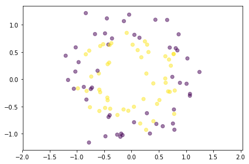
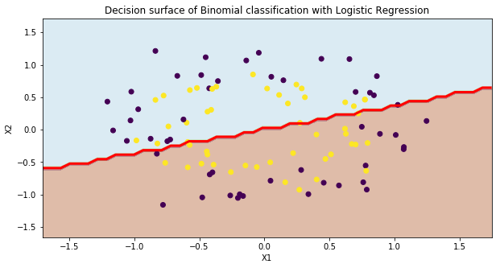
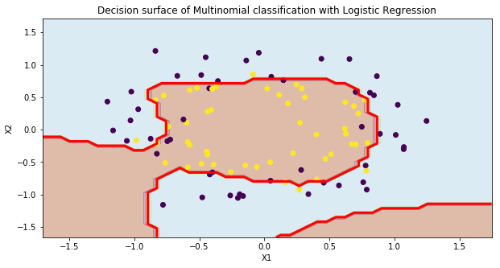

1. Introduction
After two introductory post-series (linear and logistic regression), we dive into a crucial topic that every machine-learning practitioner should be at least aware of: model selection.
Basically, we do not want our models to learn our data by heart and then to struggle to handle new unseen data samples. We want them to be great at generalizing.
We have introduced the bias and variance concepts in Part1 and the bias-variance dilemma, the model capacity, the training/testing split practice and learning curves analysis in Part2. We moved to the cross-validation and regularization techniques in Part3, implemented the Ridge regression in Python in Part4.
We apply the same workflow of the mini-series about model selection for a linear binary classification problem (first and second posts) to a non-linear case, where the model needs to separate two circular clouds with a circle. Here we start with the comparison of two models with different complexity.
2. Dataset
We start by generating a synthetic dataset for a non-linear binary classification problem.
We use make_circles to have two concentric rings that slightly overlap with some noise.
The model output is the class of the cloud, either 0 for purple data points or 1 for yellow points.
from sklearn.datasets import make_circles
def genCircles(Npnt=100):
return make_circles(n_samples=Npnt, shuffle=True, noise=0.15, random_state=None, factor=0.7)
XX, YY = genCircles()
plt.figure()
plt.scatter(XX[:,0], XX[:,1], c=YY, alpha=0.5)
plt.axis('equal')
plt.tight_layout()

3. Low-degree model
We start classifying our data with a low-degree model:
$$ y = \sigma\big( X\cdot W \big) \quad X = [x_1, x_2, 1s] $$
where the dimension of the weight matrix $W$ is (3, 1) and $X$ (X in the code) is the horizontal concatenation of the two coordinates and the bias 1s.
We train a logistic regression with no regularization by setting a very high C factor as the inverse of regularization strength.
# multi-nomial
lgr = LogisticRegression(C=1e5) # we want to ignore regularization
lgr.fit(XX, YY)
Ypred = lgr.predict(XX)
print('Model accuracy: {}'.format(metrics.accuracy_score(YY, Ypred)))
Model accuracy: 0.52
We want to explore the trained model behaviour across the whole 2D domain.
We use the meshgrid function to create a 2D grid from two 1D arrays, ravel the two 2D coordinates’ arrays x1grd and x2grd and vertically stack them to a (2, Npnt*Npnt) array and transpose it to have an array structure that the predict function expects, (_, 2), since the model has learnt two weights for the two features.
The final step is to reshape the model prediction to the 2D grid shape to visualize it as a contour plot.
Be aware the bias is internally inserted into the model, so there is no need to feed a column of 1s together with the XX array.
Npnt = 50 # number of points of the mesh
mrg = .5
xx, yy = XX[:,0], XX[:,1]
x1min, x1max = xx.min() - mrg, xx.max() + mrg
x2min, x2max = yy.min() - mrg, yy.max() + mrg
x1grd, x2grd = np.meshgrid(np.linspace(x1min, x1max, Npnt), np.linspace(x2min, x2max, Npnt))
ygrd = lgr.predict(np.vstack((x1grd.ravel(), x2grd.ravel())).T)
ygrd = ygrd.reshape(x1grd.shape)
The figure shows the dataset points from the two classes with yellow and purple colours, the contour plot of the model outcome for the 2D grid and the decision boundary as a red line.
It can be easily achieved with the contour plot itself, by setting the levels attribute to the output level we want to highlight.
A logistic regression shifts from one class to the other one when the probability exceeds 0.5.
It is quite evident how this first-order model cannot classify the dataset, as it is not possible to separate two concentric circles with a line.
plt.figure(figsize=(10, 5))
# contour
plt.contourf(x1grd, x2grd, ygrd, cmap=plt.cm.Paired, alpha=0.4)
plt.title("Decision surface of Binomial classification with Logistic Regression")
plt.axis('tight')
# dataset
plt.scatter(XX[:,0], XX[:,1], c=YY, cmap='viridis')
plt.xlabel("X1")
plt.ylabel("X2")
# decision boundary
cs = plt.contour(x1grd, x2grd, ygrd, levels = [0.5], colors=('r',), linestyles=('-',),linewidths=(3,));

3. High-degree model
We repeat the same classification procedure with a full five-degree model:
$$ y = \sigma\big( X\cdot W \big) $$
where the dimension of the weight matrix $W$ is (21, 1) and $X$ (X in the code) is the horizontal concatenation of twenty polynomial coordinates’ terms (such as $x_1^k$ and $x_2^k$ for $k \in (1, 5)$ and $x_2^k\cdot x_2^{m-k}$ for $m \in (1, 5), k \in (1, m)$) and the bias 1s.
Check the Pascal triangle to easily visualize that 21 terms come from one 0-degree term, two 1-degree terms, three 2-degree terms, up to six 5-degree terms, that sum up to $1+2+3+4+5+6 = 21$.
We transform the linear input, scale and feed it into the logistic model with no regularization.
dgr = 5
pf = PolynomialFeatures(dgr, include_bias=False)
scl = StandardScaler()
XXnl = pf.fit_transform(XX) # not-linear
XXnl = scl.fit_transform(XXnl)
# multi-nomial
lgr = LogisticRegression(C=1e5)
lgr.fit(XXnl, YY)
Ypred = lgr.predict(XXnl)
print('Model accuracy: {}'.format(metrics.accuracy_score(YY, Ypred)))
Model accuracy: 0.85
We use the earlier-defined 2D meshgrid, preprocess it to get the input array,
Before feeding it to the predict function, we need to transform and scale the grid input data as well.
Npnt = 50 # number of points of the mesh
mrg = .5
x1min, x1max = xx.min() - mrg, xx.max() + mrg
x2min, x2max = yy.min() - mrg, yy.max() + mrg
x1grd, x2grd = np.meshgrid(np.linspace(x1min, x1max, Npnt), np.linspace(x2min, x2max, Npnt))
XXgrd = np.vstack((x1grd.ravel(), x2grd.ravel())).T
ygrd = lgr.predict(scl.transform(pf.fit_transform(XXgrd)))
ygrd = ygrd.reshape(x1grd.shape)
The figure shows the same comparison as before. The only difference is the decision boundary between the two classes. It is much more sensitive to the data points in the overlapping region and extends the inner class (yellow dots) to the south-west and -east areas.
plt.figure(figsize=(10, 5))
# contour
plt.contourf(x1grd, x2grd, ygrd, cmap=plt.cm.Paired, alpha=0.4)
plt.title("Decision surface of Multinomial classification with Logistic Regression")
plt.axis('tight')
# dataset
plt.scatter(XX[:,0], XX[:,1], c=YY, cmap='viridis')
plt.xlabel("X1")
plt.ylabel("X2")
# decision boundary
cs = plt.contour(x1grd, x2grd, ygrd, levels = [0.5], colors=('r',), linestyles=('-',),linewidths=(3,));
